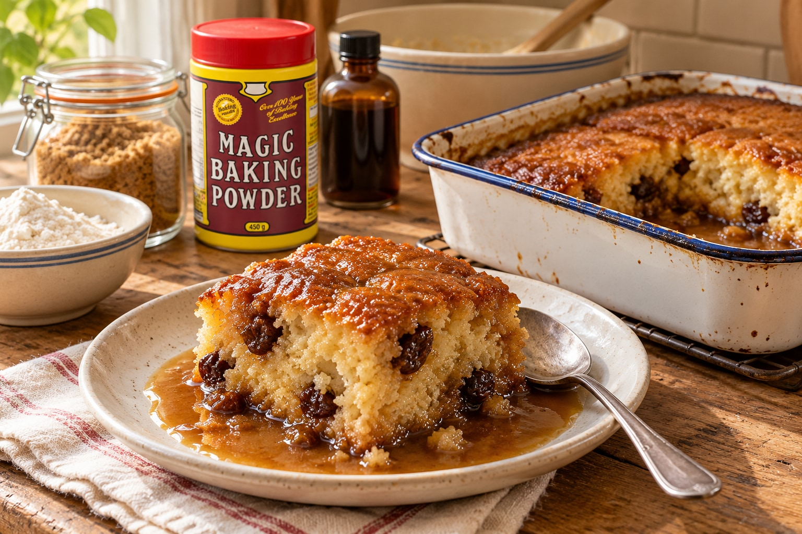

Hard Time Pudding
Jump to recipe ↓ Nutrition ↓
The Story
This is a "magic" recipe, a perfect example of kitchen ingenuity that seems to defy logic. It's a "self-saucing" pudding. A simple, eggless batter is spread in a dish. Then, a hot, watery syrup is poured over the top. It looks like a mistake.
But during baking, a "system dynamic" occurs: the light batter rises through the syrup, creating a fluffy, tender cake on top, while the syrup settles to the bottom, thickening into a rich, delicious sauce. It's an "emergent property" of the system—a complex, two-part dessert that appears "magically" from one simple assembly.
The Recipe
- Prep Time
- About 15 minutes
- Cook Time
- 30 minutes
Prep time is an estimate.
Ingredients
- For the Batter:
- 1 cup flour
- ½ cup white sugar
- 3 tsp. baking powder
- ½ cup water (or milk)
- ½ cup raisins (Optional)
- For the Syrup:
- 1 ½ cup brown sugar
- 1 Tbsp. butter or margarine
- 1 tsp. vanilla
- 1 ½ - 2 cups boiling water
Instructions
- Preheat your oven to 300°F (150°C).
- Make the batter: In a bowl, mix together the flour, white sugar, baking powder, and water/milk. Stir in the optional raisins.
- Pour this batter into a baking dish (an 8x8 pan works well).
- Make the syrup: In a separate saucepan or bowl, combine the brown sugar, butter, vanilla, and boiling water. Stir until the sugar is dissolved.
- Gently pour this hot syrup over the back of a spoon all over the top of the batter in the dish. Do not mix.
- Bake at 300°F for 30 minutes. The cake will rise to the top, and the sauce will be bubbling underneath.
- Serve warm, spooning the extra sauce from the bottom of the dish over the cake.
The Economic Lesson
Principle: Free systems produce "emergent properties" (like abundance) that cannot be centrally planned.
This pudding is a perfect economic model. If you just looked at the components (flour, sugar, water), a central planner would "calculate" a simple, boring cake. But when the components are allowed to interact freely under the right "rules" (the heat of the oven), something "magical" and unplanned emerges: a sauce.
This "sauce" is the abundance that a free market creates. It's the innovation, the extra wealth, the "magic" that no government committee can ever design. This is the power of human dignity and freedom in action. When individuals are allowed to trade and interact freely, the result is not just the sum of the parts—it's an "emergent" standard of living that defies all top-down predictions.
Learn more at The Trading Post →